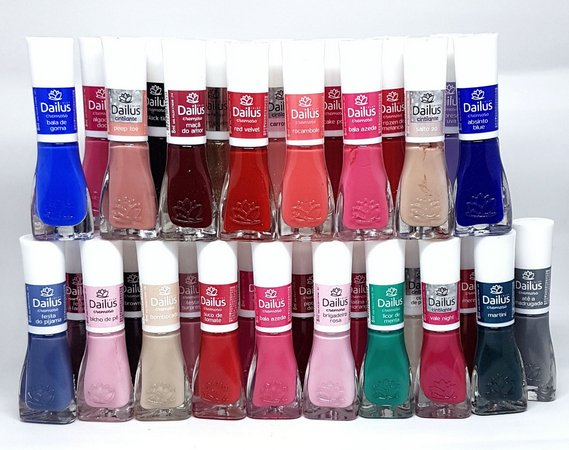

Para quem está buscando uma maneira de aumentar a renda, pode se interessar em algum produto que consiga trazer lucros e manter uma boa rede de clientes. Uma opção através da venda de cosméticos, contando com uma boa opção que é qual o melhor colágeno para conseguir vender também no seu negócio de cosméticos.

Kit com 30 Esmaltes Dailus - Coleção de Esmaltes Dailus
Em um design exclusivo, sua tampa anatômica possui um pincel flat big blush, desenvolvido com cerdas mais cheias, proporcionando uniformidade na aplicação e resultado surpreendente.